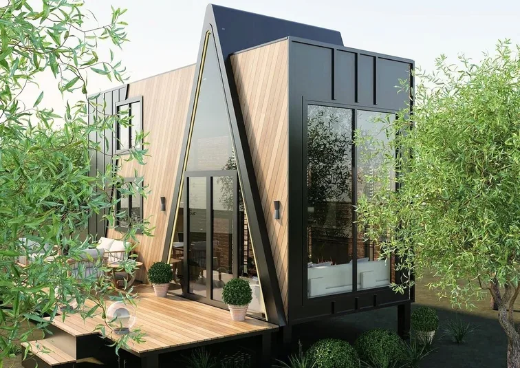

Tiny house in Christiansfeld
Direct from our own production, individually configurable and structured for preliminary delivery, site and local-requirement checks.
MODUNERA plans tiny-house projects for Christiansfeld using eight base models, bespoke interiors and project-specific logistics checks. Local permission or final deliverability is confirmed only after plot and document review.
Planned for Christiansfeld, built in our own production.
Wind, humidity and driving rain call for robust junction details, controlled ventilation and corrosion-protected exterior components.
Tiny house first
Eight models form the core. Length, layout, facade and services are selected for the intended use.
Bespoke furniture
Kitchen, storage, stairs and built-ins are designed around circulation space and weight.
Document check
Technical documentation is aligned with the destination project's requirements.
Delivery planning
Route, dimensions, weight, access and unloading are treated as one process.

Mobile does not automatically mean permit-free.
In Denmark, new buildings, extensions and changes of use generally require permission. The municipality handles applications; smaller buildings may have exemptions but still have to meet applicable rules.
Official starting source ↗Reviewed 2026-08-13. General guidance only; not legal or authority advice.
Three possible routes to Christiansfeld.
The transport method is selected only after technical data and route checks.
Road-going trailer
Only with suitable approval, insurance, dimensions, weight and driving entitlement.
Low-loader
For units that are not road-approved or require special handling due to dimensions.
Ro-Ro / Ferry
As one leg of a combined route; port, schedule and onward road delivery are quoted per project.
Unloading
Check final access, manoeuvring space, crane need, ground and utility connections.
Questions before quotation.
Specific answers come from the site, intended use and technical specification.
Delivery to Christiansfeld is assessed against model, dimensions, weight, route, final access and unloading point. Timing and cost become reliable only after logistics approval.
Wheels or a trailer do not automatically remove planning requirements. Intended use, duration, plot and the rules of the competent authority in Denmark must be checked before ordering.
Depending on the model, delivery may use an approved road-going trailer, a low-loader or special transport, or a combined route with a ferry or Ro-Ro leg.
Yes, subject to project design. Insulation, glazing, ventilation, heating and frost protection must be specified for the plot and intended use in Christiansfeld.
Yes. Kitchens, stairs, storage, fitted units and loose furniture can be made to measure within the project's weight, services and layout limits.
Send the destination, intended use, number of occupants and budget range by WhatsApp. We then structure the model, site, documentation and logistics pre-check.